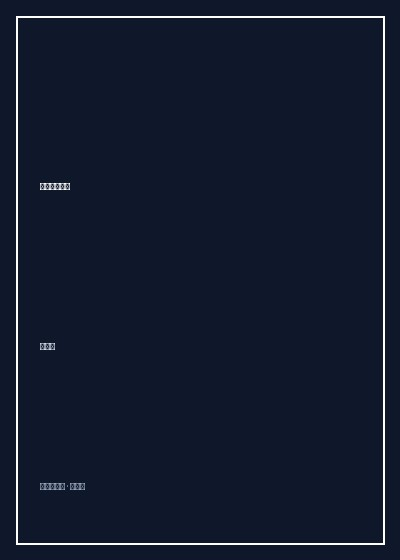

《新闻理论十讲》

总体观点
新闻学不仅是传播技巧的传授，更是对公共信息伦理与现代文明常识的守卫。新闻的核心价值在于对新近发生事实的及时、真实与客观陈述，坚决杜绝为了宣传目的或流量迎合而隐瞒、裁剪或虚构事实。
新闻客观性不是绝对中立的乌托邦，而是职业记者的专业操作程序与自律规范。客观性原则要求记者在采写过程中严格区分‘事实’与‘意见’，对争议事件提供多元信源平衡呈现，杜绝带有情绪偏见的价值审判。
现代传媒必须承担起公共守望者与舆论监督的崇高职责。媒体的公信力建立在对公众知情权的保障与对权力异化的警惕之上，唯有在法治与职业伦理框架内坚持说真话，新闻业才能成为维系社会良性运转的稳定阀。
核心观点
-
1. 真实是新闻的生命线
新闻真实性包含微观细节真实与宏观本质真实两个层次。任何局部的艺术加工、时空挪移或细节杜撰，都会瞬间击碎报道的公信力，导致新闻退化为虚构文学。
某报记者在灾情报道中为了增强感人效果，虚构了一名孤儿在废墟前痛哭喊妈妈的细节，事后被查实该孤儿当时早已安全撤离，引发全国公众对报道真实性的整体信任危机。 -
2. 客观性作为操作规范与自律纪律
客观性不是说记者没有个人情感，而是要求在写作时遵循‘引述两方以上对立信源’、‘使用中性动词’和‘事实与观点严格分离’的专业技术规范。
报道环境污染民事诉讼时，报道必须同时列出村民出具的地下水化验报告数据与化工企业法务部门给出的排污达标说明，不预设任何一方为有罪标签。 -
3. 事实与宣传的根本分野
新闻以事实为本位，致力于告知受众新近发生的变动；宣传则以意志为本位，致力于通过信息筛选与情绪煽动让受众服从特定意图。混淆两者的界限会导致新闻价值的彻底扭曲。
新闻报道面对重大工厂火灾时应如实报告伤亡人数与起火排查进度，而不能在事故原因尚未明朗前便全部篇幅转向讴歌各方领导慰问关怀。 -
4. 舆论监督与权力制衡的社会功能
媒体监督不是跟政府作对，而是帮助社会发现溃烂的早期脓疮。没有敏锐透明的舆论监督，权力的腐败与官僚机构的瞒报迟报就会滋生蔓延并最终导致系统性崩塌。
《中国青年报》当年发表《红色的警告》等关于大兴安岭特大森林火灾的三篇深度反思报道，直面官僚失职与体制僵化，推动了全国林业安全制度的深刻重构。 -
5. 媒介伦理与公民隐私权保护
新闻自由并非没有边界，在追求轰动效应与知情权的同时，媒体必须严格克制，不得侵犯普通公民、特别是刑事案件未成年人家属的隐私与人格尊严。
在校园恶性霸凌事件报道中，严厉禁止媒体未经打码披露受害者及其同班同学的真实面孔、住址与学籍信息，防止二次心理创伤。
全书结构
-
第一讲 新闻是什么？
深入剖析新闻的定义、本质与信息属性，厘清变动之发生与信息传递之间的因果链条。
引用徐宝璜、陆定一等中外理论家对新闻的经典定义，界定‘新近发生事实的报道’这一核心内涵。 -
第二讲 新闻真实
详尽论述新闻真实的哲学基础与操作准则，揭示假新闻出笼的体制、心理与经济动因。
回顾‘普利策奖假新闻事件’（如《吉米的世界》虚构八岁海洛因瘾君子），警示记者追求煽情叙事的伦理深渊。 -
第三讲 新闻价值
系统讲解新闻价值的时效性、接近性、重要性、显著性与趣味性五大经典构成要素。
对比同样是停电事件，普通小区断电三分钟与华尔街证券交易所因电网故障停电两小时在报道层级上的巨大差异。 -
第四讲 新闻客观性原则
梳理客观性理念在西方新闻史中的演进，探讨现代记者如何通过程序正义达成事实平衡。
分析美联社百年电讯写作规程，如何用‘表示’、‘声称’等严格限定词取代带有主观定性意味的带有评价色彩的动词。 -
第五讲 新闻体制与传播制度
横向比较世界主要国家的新闻媒介所有制形态、行政监管逻辑与公共服务广播模式。
对比英国BBC的牌照税资助公共模式与美国商业电视网完全依赖广告赞助的收视率导向运作模式。 -
第六讲 新闻舆论与社会监督
探讨大众舆论的形成规律，论证新闻媒体作为公共论坛与权力守望者的监督边界与社会担当。
以‘水门事件’中《华盛顿邮报》记者的深度调查为例，剖析新闻媒体如何凭借独立监督撼动总统滥权。 -
第七讲 媒介伦理与职业道德
聚焦利益冲突、隐形采访、有偿新闻与灾难报道现场的人道关怀，探讨职业道德红线。
探讨突发地震或空难现场记者是否应该把救人置于拍摄之前，强调生命救助高于一切新闻采写的崇高原则。 -
第八讲 新闻法治与言论自由
从法律维度阐明新闻自由、国家安全、名誉权与商业秘密之间的法律博弈与权利界碑。
剖析‘萨利文诉《纽约时报》案’中‘实际恶意’（Actual Malice）法律原则的确立，对保护公共监督言论的深远意义。 -
第九讲 新技术对新闻业的重塑
审视互联网、社交媒体与算法推荐崛起后，对传统报刊广播把关人体制带来的颠覆性冲击。
算法推荐制造的信息茧房与深度伪造视频技术，对公众识别客观事实能力造成的全新认知挑战。 -
第十讲 新闻从业者的专业精神
全书结语，向青年新闻人发出呼吁：坚守怀疑精神、人文关怀与对常识的敬畏，捍卫记者的职业尊严。
回顾范长江当年西北独行采访写出《塞上行》的拓荒勇气，激励媒体人在浮躁时代守护真实的求索品格。